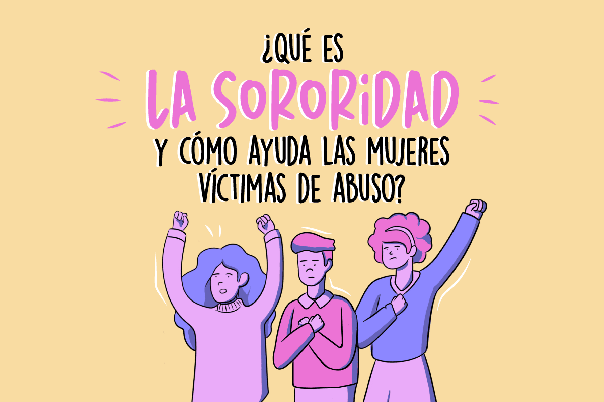

La importancia de la sororidad en la seguridad femenina: Unidas somos más fuertes
Publicado el 14 de Octubre, 2024
La sororidad, un concepto que nos invita a la solidaridad y apoyo mutuo entre mujeres, se ha convertido en un pilar fundamental para garantizar la seguridad femenina en el mundo actual. En una sociedad donde las mujeres enfrentan diferentes formas de violencia y acoso, el poder de estar unidas y cuidarnos entre nosotras puede marcar la diferencia.
¿Qué es la sororidad y por qué es clave para la seguridad femenina?
La sororidad es un compromiso activo de apoyo mutuo, comprensión y empatía entre mujeres, en la cual no es necesario conocer o ser amiga de la otra persona para brindarle nuestro apoyo, sino más bien, ofrecerla en cualquier contexto con la finalidad de saber que no estamos solas y que hay otras mujeres dispuestas a brindarnos ayuda cuando lo necesitamos creando redes de protección que fortalezcan nuestro sentido de comunidad. Imagina caminar por la calle y sentir que, si algo sucediera, las mujeres a tu alrededor estarían dispuestas a tenderte una mano. Este sentimiento de seguridad colectiva no solo reduce el miedo, sino que también empodera a cada una de nosotras para enfrentar el día a día con más confianza
Pequeños gestos de sororidad que hacen una gran diferencia
La sororidad puede manifestarse en gestos simples pero poderosos, como acompañar a una amiga a casa después de una salida nocturna, compartir información sobre lugares seguros, o incluso estar atenta a las señales de que una mujer cercana a nosotras puede estar en una situación de riesgo. Estos gestos de cuidado y protección son formas de resistir juntas a la violencia de género y promover un entorno más seguro para todas. Además, la tecnología ha permitido que la sororidad se expanda más allá del círculo cercano. Aplicaciones de seguridad para mujeres, como Lunaguard son herramientas que nos permiten mantenernos conectadas con nuestros contactos de confianza y recibir ayuda de manera rápida y efectiva cuando lo necesitamos. Pero también nos recuerdan que somos parte de una red mucho más grande de mujeres que se cuidan entre sí.
Sororidad digital: la seguridad al alcance de un clic
En la era digital, la sororidad ha encontrado un nuevo espacio en las redes sociales, grupos de apoyo en línea y aplicaciones de seguridad. Hoy, podemos apoyarnos entre nosotras con un mensaje, una llamada o un simple clic. Al compartir nuestra ubicación en tiempo real, enviar alertas o simplemente estar al tanto de los movimientos de nuestras amigas, creamos una red de protección y confianza que refuerza nuestra autonomía y seguridad. Pero la sororidad digital no es solo sobre tecnología; es un recordatorio de que podemos estar ahí las unas para las otras, sin importar la distancia. Se trata de construir una red de apoyo, en la que cada una sepa que hay alguien que la respalda, escucha y está dispuesta a ayudarla.
Construyendo una comunidad segura, unidas por la sororidad
Promover la sororidad en la seguridad femenina es un compromiso que nos toca a todas. Significa crear una cultura de cuidado, en la que nos cuidemos y defendamos mutuamente, donde el peligro no nos aísle, sino que nos una para buscar soluciones y apoyarnos. Es una invitación a formar parte de una comunidad en la que la seguridad de una es la seguridad de todas. Por ello, te invitamos unirte a Lunaguard, para crear un lazo de sororidad entre todas las mujeres, en donde formemos una red de apoyo, ya que juntas podemos hacer frente a los problemas que nos rodean.
¡Unámonos para ser más fuertes, más seguras y más libres!